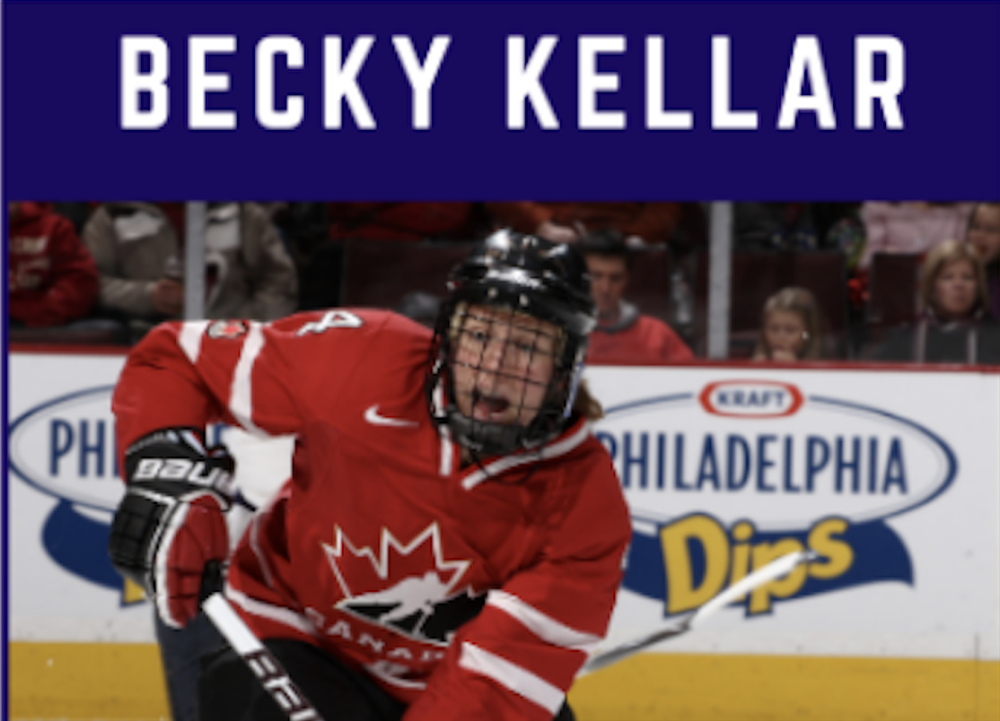

<div>
    <table style="border-style: none;">
        <tr>
            <td>
            </td>
            <td>
                <div style="font-family: Arial; font-size: 18px; color: rgb(54, 96, 146);">
                    <p> Kellar is a four-time Olympian who played in 20 games, recorded 9 points and captured 3 Gold
                        Medals (Salt Lake City 2002, Turin 2006, Vancouver 2010) and 1 Silver (Nagano 1998).</p>

                    <p>Becky was inducted to the Canadian Olympic Hall of Fame in 2012 with her teammates from the Turin
                        2006 Olympic hockey team.</p>

                    <p>Becky is a co-owner of “Strictly Hockey” with Cheryl Pounder. Together they offer a fun
                        environment where players learn new skills from these two Olympians. Their program includes
                        camps, private sessions, and key note speaking.</p>

                    <a href="https://strictlyhockey.ning.com" target="_">strictlyhockey.ning.com</a>
                </div>
            </td>
        </tr>

    </table>

</div>